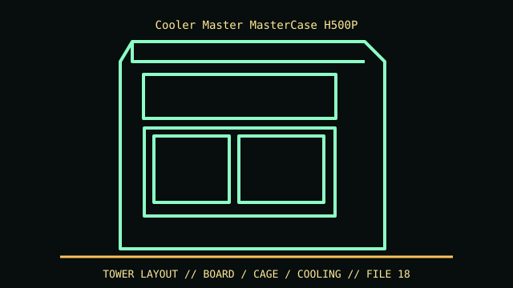

[ IDENTIFIED ENCLOSURE // MASTERCASE H500P (ORIGINAL; NOT H500P MESH) ]
Cooler Master MasterCase H500P
544 × 242 × 542 mm (L × W × H); GPU clearance 412 mm, CPU cooler 190 mm, PSU up to 220 mm.

VARIANT / ARCHIVAL CAVEAT: Original H500P differs from H500P Mesh, H500M and later front-panel revisions. Verify plastic top/front panel and included 200 mm fans.
Mechanical specifications and fit
| Catalog identity | MasterCase H500P (original; not H500P Mesh) |
|---|---|
| Dimensions and clearances | 544 × 242 × 542 mm (L × W × H); GPU clearance 412 mm, CPU cooler 190 mm, PSU up to 220 mm. |
| Drive bays / mounts | Two 3.5-inch HDD trays and two 2.5-inch SSD positions. |
| Board, system and compatibility | Mini-ITX/microATX/ATX; E-ATX boards limited by width/cable pass-through. Seven horizontal plus two vertical slots. |
| Revision / identification | Original H500P differs from H500P Mesh, H500M and later front-panel revisions. Verify plastic top/front panel and included 200 mm fans. |
Preservation and installation notes
Original H500P differs from H500P Mesh, H500M and later front-panel revisions. Verify plastic top/front panel and included 200 mm fans.
Mini-ITX/microATX/ATX; E-ATX boards limited by width/cable pass-through. Seven horizontal plus two vertical slots.
- Capture the complete model/SKU, serial/date label, board assembly and bay/backplane/riser identifiers before disassembly; keep matched screws, trays, carriers, feet and cables with the case.
- Check the cited manual's specific build option before transferring hardware. Published maximum GPU, drive, fan or radiator capacity may not be simultaneous when a removable cage or alternative riser occupies that volume.
- For rack and vintage systems, preserve the exact rails, shields, doors, brackets and model-specific safety instructions; do not infer compatibility from a familiar brand or physical connector shape.
Manufacturer manuals and archival sources
- Cooler Master MasterCase H500P product specificationPrimary manufacturer or model-specific technical/manual reference used for the identification and mechanical data above. Original page is gone; this is the Internet Archive’s copy.
- Cooler Master H500P Mesh (variant comparison reference)Second product manual, manufacturer resource or established technical archive; choose the exact regional SKU and revision.
When exact dimensions depend on configuration, the text says so; verify the measured specimen before making a fit or restoration decision.